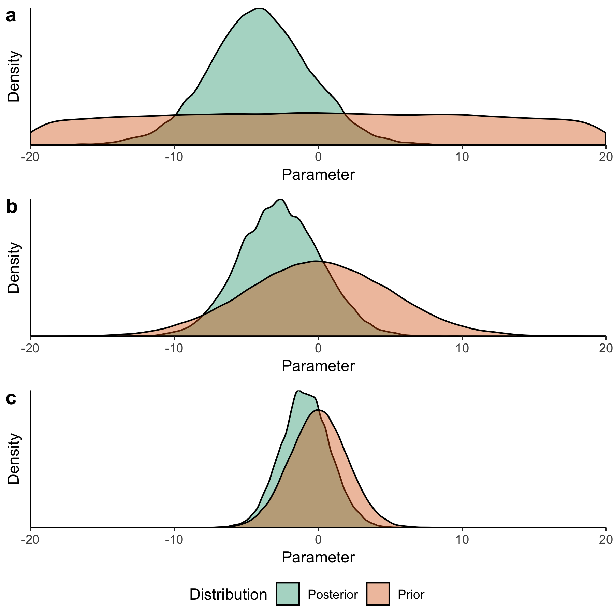

The Critical First Step: How to Choose a Prior Distribution
The Critical First Step: How to Choose a Prior Distribution¶
Prior distributions play an important role in Bayesian uncertainty quantification, particularly when data is limited relative to the dimension of the model. Bayesian updating can be thought of as an information filter, where each additional datum is added to the information contained in the prior; eventually, the prior makes relatively little impact. In real world problems, it can be extremely difficult to assess how much data is required for the choice of prior to become less relevant. The choice of prior can also be influential when conducting SA prior to or without UQ. This is because a prior distribution for a sensitivity analysis for a given parameter which is much wider than the region where the model response surface is sensitive to the parameter value might cause the sensitivity calculation to underestimate the response in that potentially critical region. Similarly, a prior which is too narrow may miss regions where the model responds to the parameter altogether.
Ideally, prior distributions are constructed independently of any analysis of the new data considered. This is because using data to inform the prior as well as to compute the likelihood reuses information in a potentially inappropriate way, which can lead to overconfident inferences. Following Jaynes [195], Gelman et al. [196] refers to the ideal prior as one which encodes all available information about the model. For practical reasons (difficulty of construction or computational inconvenience), most priors fail to achieve this ideal. These compromises mean that priors should be transparently articulated and justified, so that the impact of the choice of prior can be fully understood. When there is ambiguity about an appropriate prior, such as how fat the tails should be, an analyst should examine how sensitive the UQ results are to the choice of prior.
Priors can also be classified in terms of the information encoded by them, demonstrated in Fig. A.5. Non-informative priors (illustrated in Fig. A.5 (a)) allegedly correspond to (and are frequently justified by) a position of ignorance. A classic example is the use of a uniform distribution. A uniform prior can, however, be problematic, as it can lead to improper inferences by giving extremely large values the same prior probability as values which may seem more likely [196, 197], and therefore does not really reflect a state of complete ignorance. In the extreme case of a uniform prior over the entire real line, every particular region has effectively a prior weight of zero, even though not all regions are a priori unlikely [197]. Moreover, a uniform prior which excludes possible parameter values is not actually noninformative, as it assigns zero probability to those values while jumping to a nonzero probability as soon as the boundary is crossed. While a uniform prior can be problematic for the task of uncertainty quantification, it may be useful for an initial sensitivity analysis to identify the boundary of any regions where the model is sensitive to the parameter.
{kind=link}

Impact of priors on posterior inferences. These plots show the results of inference for a linear regression model with 15 data points. The true value of the parameter is equal to -3. All priors have mean 0. In panel (a), a non-informative prior allows the tails of the posterior to extend freely, which may result in unreasonably large parameter values. In panel (b), a weakly informative prior constrains the tails more, but allows them to extend without too much restriction. In panel (c), an informative prior strongly constrains the tails of the posterior and biases the inference closer towards the prior mean (the posterior mean is -0.89 in this case, and closer to -3 in the other two cases).¶
Informative priors strongly bound the range of probable values (illustrated in Fig. A.5 (c)). One example is a Gaussian distribution with a relatively small standard deviation, so that large values are assigned a close to null prior probability. Another example is the jump from zero to non-zero probability occurring at the truncation point of a truncated Gaussian, which could be justified based on information that the parameter cannot take on values beyond this point. Without this type of justification, however, priors may be too informative, failing to allow the information contained in the available data to update them.
Finally, weakly informative priors (illustrated in Fig. A.5 (b)) fall in between [196]. They regularize better than non-informative priors, but allow for more inference flexibility than fully informative priors. An example might be a Gaussian distribution with a moderate standard deviation, which still assigns negligible probability for values far away from the mean, but is less constrained than a narrow Gaussian for a reasonably large area. A key note is that it is not necessarily better to be more informative if this cannot be justified by the available information.